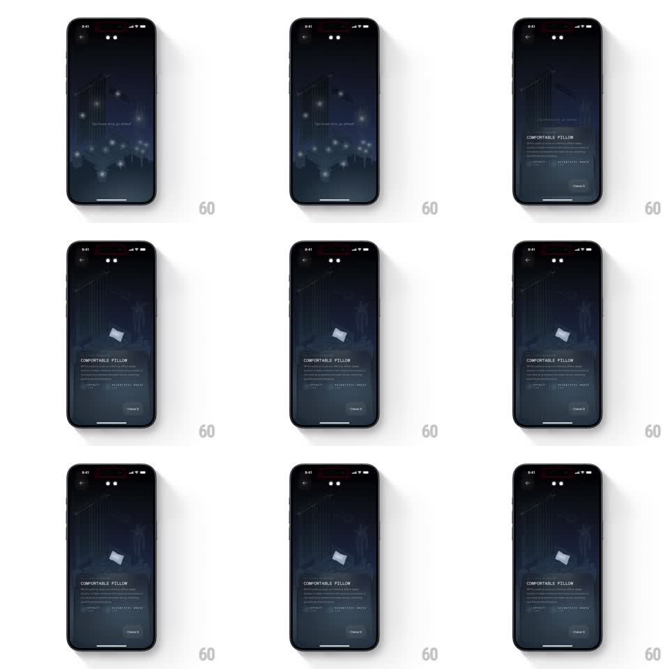

Media
Frame-by-frame

Rebuild this interaction 1:1: Remy AI's isometric bedroom explorer - glowing hotspot dots pulse over a dark bedroom scene, and tapping one highlights the object and raises a detail sheet about it.

Rebuild this interaction 1:1: Remy AI's isometric bedroom explorer - glowing hotspot dots pulse over a dark bedroom scene, and tapping one highlights the object and raises a detail sheet about it.
## Integration
Integration: stack-agnostic spec - springs given as stiffness/damping, timed motions as duration + curve; map every value to your framework and animation library of choice.
## Scene
A dark isometric illustration of a bedroom (bed, shelves, plants, lamp) drawn in dim blue linework. Several small glowing dots pulse over tappable objects, with a hint ("Tap these dots, go ahead"). Tapping the pillow dot flips the pillow from linework to a lit solid render and raises a bottom sheet: "COMFORTABLE PILLOW" with a description, attribute chips, and an "I have it" button.
## Motion spec
Pattern: hotspot tap to detail sheet, gesture-driven, ~600ms reveal.
- Hotspot dots pulse on a loop (scale 1 to 1.3 and glow bloom, 1.2s, staggered per dot).
- On tap, the dot flashes and fades; the tapped object illuminates in the scene (linework crossfades to a lit render, 400ms) while the rest of the room dims slightly (opacity to 70%).
- The bottom sheet rises (spring stiffness 280 damping 24): header, body copy, chips, and button stagger in (60ms apart).
- On dismiss, the sheet slides down (250ms ease-in), the room restores, and the dot reappears quietly.
## Calibration
- The scene is the interface - the object lights up before and while the sheet rises, never after.
- Only one hotspot is active at a time; tapping another swaps sheets.
## Reduced motion
Object highlights without dimming; sheet fades.
## Don't miss
- The room stays in isometric view throughout - no camera move.
- The "I have it" button sits at the sheet's bottom in the app's accent color.